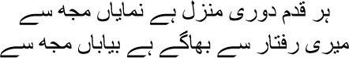
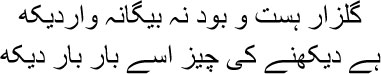

12

Every step makes the distance to the destination palpable
The desolate forest walks even faster, leaving me behind
yabaat Mirza sahib, well done, you have brought pleasures to hell. But where do you suppose the stories of the Benazirs and the Badr-e-Munirs have been lost? Have you noticed how animated our friends have become? As though plates of shahi kebab have just been served at our table at Aziz’s restaurant, and it will get even more exciting with the meat and the hashish and the ribaldry. Our Captain Wahid was chasing some woman or the other at the time. Which is all very well, but is there any sense in being besotted with a woman all the time, Mirza sahib? The Captain was perpetually terrified that she would run off with another man. Let her if she wants to, for heaven’s sake, is the world running short of whores? Pardon me, Mirza sahib, I can never mind my tongue. If I let slip something like this in Ismat’s presence, she would look at me wide-eyed; she was the one woman who could shake me and say, ‘Who’re you calling a whore, you bastard? Which whore gave birth to you?’ Not that Ismat ever said any such thing. Her sense of propriety was unmatched. She would only look at me with widened eyes; you had to decipher her meaning from those eyes. Never mind Ismat, can’t you see all these people are dying to hear the story of Aziz in hell?
So, one day our Captain was drooping over the table like a vine uprooted by a storm. Apparently he hadn’t met the woman in several days. The more we tried to cheer him up, the more the bastard curled up like an earthworm, unmoved by our laughter and jokes and profanities. Who was this Majnu in our midst, for heaven’s sake? And yet, think of his name. Captain, Captain Wahid. After much effort on our part he finally asked tearfully, ‘What are women really like, Saadat bhai?’
— What?
— Do they know how to love?
— How should I know? I lost my temper.
— Tell us, yaar … Ashiq clapped me on my back. ‘Tell Captain that story of yours about the cat. He won’t go sniffing after just one woman all his life when he hears it.’
The table erupted in laughter. Looking at us with tears in his eyes, Captain said, ‘But I was asking about women. Where do cats come into it?’
— Let Manto tell you. Ashiq winked at me. In other words, out with it, quick. Let this damned Captain’s romance be buggered. Ashiq was an expert at teasing people.
Comforting Captain, I said, ‘See, Captain, I swear by the lord, I can never understand cats and women.’
— Why? Cats are cats and women are women. What’s so difficult about understanding them?
— We had a cat at home, you know. Once a year that damned cat would start wailing so loudly, it defies description. You must have heard a cat wail. It makes the entire world sound like it’s in mourning. And its wails would bring forth a tomcat from somewhere. Then they would screech and fight and draw blood.
— And then?
— What do you suppose? The cat would become the mother of four kittens. The net result of all that fighting was those four kittens.
— You’re a fucking bastard, a harami ka bachha, said the Captain, slumping on the table again. Meanwhile, Aziz’s restaurant resounded with laughter and catcalls.
But Mirza sahib, in spite of all this tomfoolery, I wasn’t enjoying myself anymore. The gambling was becoming tiresome, and the mornings and evenings at Aziz’s restaurant had nothing more to offer me. Do you know the thought that crossed my mind? That I was actually meant to do something else. But what? I had no idea, Mirza sahib. Then suddenly, the hands of the clock changed direction one day. This is probably how life gives us things even without asking. Provided, of course, we have the capacity to accept them.
It was in the same Aziz’s restaurant that my fortune took a turn, my brothers. I met Bari Alig and Ata Muhammad Chihati. They were older than I was. They would visit Aziz’s restaurant from time to time for a cup of tea. Abdul Rahman sahib had started a newspaper named Masawat—Equality—where Bari sahib used to work. One day in Aziz’s restaurant, I was sitting at the same table as Bari Alig sahib. There were several others too. Suddenly the subject of the death sentence came up. Was the death sentence right or wrong? Did anyone have the right to sentence a criminal to death? Explain this to us, sir, I requested Bari sahib. If I murder you, why cannot I be killed? He presented a strong argument, explaining why retaliating for murder with murder cannot be the option. There is no moral principle that justifies the death sentence. This led someone to mention Victor Hugo’s book The Last Days of the Condemned. You can’t have heard of Victor Hugo, Mirza sahib. He was one of the finest French poets and novelists. I was startled, because I had the book at home. ‘I have this book,’ I told Bari sahib at once. ‘Would you like to read it again?’
Bari sahib looked at me for a long time. Who knew what he saw? Then he said, ‘Bring the book to my office tomorrow.’
I couldn’t sleep all night, Mirza sahib. I was proud of myself. The book of Hugo’s that Bari sahib had mentioned was actually in my possession, and I would take it to him the next day. But what would I talk to a man like him about? Would he even talk to me? As I pondered over all this, I imagined a complete dialogue between us. This was also how stories were born within me, Mirza sahib. A face would float up in my mind, and I’d knit a tale. The characters would come alive.
Bari sahib took me under his wing. I began to frequent his newspaper office every day. I was bowled over by his arguments, his erudition, his appreciation of things. I wrote about him later in my book Ganjay Farishtey—Bald Angels. You cannot forget such a person all your life. At the same time, he was something of a coward as well. But once you got talking to him, once you heard him laugh, you were hooked. Bari sahib had sensed my restlessness. He told me to read Urdu literature. It was at his behest that I began to read Gorky and Gogol and Pushkin and Chekov and Oscar Wilde. The great writers of the world. As I read them, Mirza sahib, I seemed to see the road before me clearly—I would be a writer too, writing was the only mission I could pursue. Do you know what Bari sahib did then? He made me translate Hugo’s The Last Days of the Condemned into Urdu. I stuck to my task for two weeks straight, not touching a drop of alcohol. Then my Urdu translation was actually published by Lahore’s Urdu Bookstall—Aasir Ki Ye Sarguzasht. I was finally someone. So you think I’m useless, you bastards? Here, you swine, look at this. This book has Saadat Hasan Manto’s name on it.
I began to write film reviews regularly for Masawat. Bari sahib believed that the short story writer in Manto was born in those reviews. I wanted to do several things at once, Mirza sahib. I translated Oscar Wilde’s play Vera together with Hasan Abbas. I took a bottle of rum to Akhtar Sherani. He drank all night long and corrected my manuscript. I translated several Russian stories too at the time for Humayun and Alamgir magazines.
Then Masawat closed down suddenly. Bari sahib went off to Lahore with a job in a newspaper. I used to wander about in Amritsar’s bylanes, along with Abu Sayeed Quraishi, Abbas, and Ashiq Bari. We called ourselves The Free Thinkers’ Group. We could do as we liked, think as we liked. We considered starting a revolution. Abbas and I had even mapped an overland route to Russia. But after Bari sahib’s departure for Lahore, I was out of a job once again. I couldn’t concentrate on writing either. Once in a while I had the urge to just go back to gambling; damn it all, at least the hours would pass lightly. But gambling no longer excited me, Mirza sahib.
We heard that Bari sahib had started a new weekly magazine named Khulq. Hasan Abbas and I joined him. The very first issue of the magazine carried Bari sahib’s essay, From Hegel to Marx … What is it? Why are all of you staring at me this way? Your eyes look as though you’re sleepy. You too, Mirza sahib? Pardon me, my brothers, I was supposed to tell you stories, but here I am in the clutches of history without even knowing it. I feel like laughing at myself now. Damn it, this is like an autobiography. This is why I have to tell myself sometimes—you son of a bitch, are you in your grave to peddle your autobiography? But let me tell you something before I stop. It was in that first issue of Khulq that my first story, ‘Tamasha’, came out. I thought the story was rather juvenile, which is why I didn’t publish it under my own name. It was about the period under Martial Law in 1919, seen through the eyes of a seven-year-old. I’m sure you remember I was seven too in 1919. I was always part of my stories.
All right, let me tell you some stories about our drinking. There, Mirza sahib, see how everyone’s eyes are shining now? But what’s the use? How will we get alcohol in our graves? Just like a cow chewing cud, try chewing the cud of your drinking days, you might get a little high. Bari sahib used to say no one could be bigger drunkards than Abbas and I. To tell you the truth, pardon my profanity, Abbas and I used to drink till we were full all the way down to our arse. Abu Sayeed Quraishi was always the one to unscrew the cap. There was no holding back after that. And as for Bari sahib, he was a garrulous sort anyway; with a drink under his belt, he was like a talking fountain. Abbas and I were such bastards; we would say in our heads, talk as much as you want to, huzoor, while we take care of the bottle. Bari sahib used to get drunk on giving speeches. But he didn’t dare address meetings or anything like that. All of it was reserved for us, while we quaffed our drinks.
But he was such an entertaining drinking companion that it was no fun hitting the bottle without him. One evening he turned up at home. I was sitting by the window. ‘How are you, mian?’ he asked with a smile.
— Left high and dry.
With a mischievous smile in his eyes, he said, ‘Just a minute, I’ll bring some.’ He was back soon with a bottle of alcohol wrapped in a piece of cloth. It was uncorked before I could say a word. By then Abbas had arrived too. We shut all the doors and windows. Abbas brought some water in a tumbler from the draw-well outside. And the party began. Some time later, to provoke Bari sahib, Abbas said, ‘Everyone in this family respects you. Even bibijaan, since you read the namaz regularly. What will happen if she turns up?’
Jumping up from his chair, Bari sahib said, ‘I’ll escape through the window, and I’ll never appear in her presence again.’
This was the kind of cowardice on Bari sahib’s part that I was talking about. And it was because he lacked spine that he accomplished none of the things someone of his calibre should have. After he got a job at the British High Commission, he drifted away from us. We would run into him on the road sometimes. He pretended not to recognize us. I met him at Zohra Chowk a couple of days before he died. He made me realize how a man could be destroyed in the process of making compromises. I was genuinely upset. Was this the same Bari sahib whose support had led to Manto being reborn?
Have patience, my brothers. I had written explicitly in Ganjay Farishtay about Bari sahib’s ardent desire to be a social reformer. He wanted to be well known across the entire country. He would be the venerated pioneer who had shown the nation the way. He used to dream constantly of doing something that the next generation would remember him for. But Bari sahib lacked resolve. All he could do was discuss the condition of the country with the women at Hira Mandi after a couple of drinks. When he returned, he would sit on his heels and read the namaz. I really did feel sorry for him Mirza sahib; could a man stoop so low just to save his skin? Bari sahib must be in one of these graves somewhere, perhaps he can hear me too, but there’s no window here he can escape through. There’s always a window one can use to escape, isn’t there, Mirza sahib? This is where we have to pay the price of life, with interest added to the principal. Pardon me, my brothers, for spouting philosophy again. But you know what, I couldn’t even bring myself to hate Bari sahib. I felt nothing but pity for him. Do you know what I think—the person who offers pity is a worse person than the object of it.
No, no more of this melodrama, let’s talk about Hira Mandi instead. Do you know what Lahore used to be called before the Partition? The Paris of the East. And Hira Mandi was its heart. Many people used to call it Tibbi.

Come to Tibbi to see God’s charisma
You have to see it over and over again
Hira Mandi was another name for the light of the walled city of old Lahore. This was where I had discovered Sultana and Saugandhi and Kanta, my brothers. If you thought Hira Mandi was nothing but mounds of flesh, you’d be wrong. Once upon a time the scions of nawabs and badshahs and kings and emperors used to visit the courtesans of Hira Mandi to learn etiquette and culture—the adab and the tahzeeb. It was the courtesans who were the best teachers of behaviour. Their tools were the song and the dance, the lingering glances and conversation. Those of you who have read Mirza Ruswa’s Umrao Jaan Ada will know exactly what I’m talking about. And our Mirza sahib knows everything too. He met so many famous courtesans in his lifetime. The kotha of the courtesan was not just a place you visited for pleasure. To be part of the gatherings you had to master the necessary social graces. It’s not as though you could pounce on anyone you liked. Wooing was necessary. Only if you managed to set a woman’s heart on fire did the question of going to bed with her arise. Else, listen to all the thumris and dadras and ghazals you want, watch the kathak, and then make your payment and go home.
Yes, now you’re standing at the bottom of the stairs of a kotha in Hira Mandi. There are pimps, there are flower sellers. Only after negotiating with the pimp will you be able to enter the kotha. But before that, you must buy a garland from the flower seller and wrap it around your wrist. Then you climb the stairs to the rangmahal, the hall of entertainment. The light from the chandelier, the mirrors on the walls, the classical paintings, and the fragrance of the flowers and the perfume converts your heart into a garden in an instant; the nightingales begin singing from the trees. A fine white sheet is spread over the carpet on the floor. Bolsters await you, lean back on them. The baiji appears and takes her position in the middle. Behind her are the musicians playing the sarangi and the veena and the tabla. You see that old woman sitting a little apart from everyone else, she’s the owner of the kotha. Once she was a courtesan herself, now she supervises everything. She puts the apprentices through their paces, turning them into alluring tawaifs too. Next to the owner is the silver salver, adorned with golden and silver foil, piled high with paan. On a marble stool is a golden filigree jug of rosewater. Sliced betelnuts dusted with saffron, masala and zarda lie in a small bowl. The owner will first exchange a word or two with each of the guests, sizing them up. Then a young woman will circle around the room, handing paan to everyone. What must you do? You must give her at least one silver coin. Then the baiji will come up to you in her silk shalwaar and kurta, its front embellished with an intricate pattern in golden or silver zari. Her face will be hidden behind a translucent veil, as though she’s put on a cloud of fog. Her ornaments will glitter under the lights.
Now the baiji will begin singing. A different song for each of the guests, as she sings she will give you lingering looks and gentle smiles. When the song ends, beckon her to come closer and put a bundle of currency notes in her hand. Then she will turn her attention to the other guests. You may be keen on watching her dance too. The anklets will start their patter. Cries of ‘wah wah’ and ‘bahaut khoob’ and ‘marhabba, marhabba’ will mingle with the song and the music and the rhythms of the dance. Although the glory of Hira Mandi had faded after the advent of the British, the glow of the sunset had not disappeared. But from the Second World War onwards, Hira Mandi turned into a prison of flesh. Who were the clients then? Freshly sprouted businessmen, contractors, scum who had cashed in on the war to make quick money. They didn’t even know the meaning of the word decorum. I have seen both the Hira Mandis, my brothers. I have seen the baijis of the kothas turn into call girls, ready to get into a hotel bed with you as soon as you paid them. But to me Hira Mandi was a gold-enamelled picture.
I have seen a man become a pauper here, not for flesh but for love. I will not tell you his name, he was a landowner from Punjab. He fell in love with Zohra Jaan from Hira Mandi. He used to visit her frequently and stay with her. People used to say it was he who made her a woman. You understand what that means, don’t you, my brothers? Suddenly the landowner had a fancy for buying a car so that he could take Zohra around Lahore’s streets in it. He might have been a landowner, but he hadn’t been able to save much money; and he had spent extravagant amounts on Zohra’s family. But he had to buy a car. Eventually he bought one on loan. He had promised to return the money in two instalments a year, from the proceeds of selling the crops on his land. The loan should have been paid back in three years. The car company got its money on time only twice. After that the landowner disappeared. No one knew where he had vanished. All that could be discovered was that he had sold all his land and gone off to Calcutta with Zohra Jaan. The car was parked next to his country home, which was why the company at least got its vehicle back.
About ten years passed. The manager of the car company was at Hira Mandi with his friends for a colourful evening. Standing before a kotha, he discovered the absconding landowner looking sickly with his eyes glazed over.
— Would you like to hear Zohra Jaan sing, huzoor? The landowner approached the manager.
— What’s happened to you? Where were you all this time?
— It’s all fate, huzoor. I took Zohra to Calcutta. I tried very hard to get her into films.
— And then?
— Didn’t work. We ran out of whatever little money I had. They simply wouldn’t let Zohra work in films.
— So you came back?
— What else could I do? Zohra had to survive. How could I abandon her? So I have to get clients for her now.
Just like all the light in Hira Mandi, darkness fell on some people’s lives too. But even in this darkness I have seen a glowworm, my brothers. The glow-worm of love. Even though he was a pauper, he had not abandoned Zohra Jaan. From her lover he had become her pimp. But his love hadn’t died.
People like Bari sahib didn’t see any of this in Hira Mandi. And I used to go to Hira Mandi in search of jewels within flesh, in search of glow-worms. I swear by Allah, Manto never considered sleeping with them. Is that the truth? Or is this another of my lies?